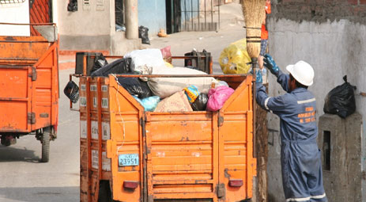
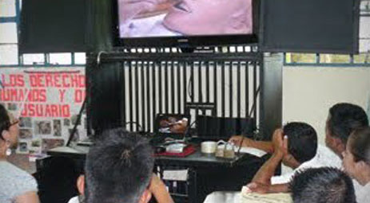
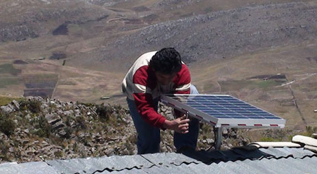

Innovación en el acceso a servicios básicos: cinco casos de estudio
Desde hace unos meses, el FOMIN junto con el Centro de Innovación en Tecnología para el Desarrollo Humano de la Universidad Politécnica de Madrid (itdUPM) hemos comenzado a trabajar en la identificación de cinco modelos innovadores basados en alianzas con el sector privado para la provisión de servicios básicos a población de bajos recursos en América Latina y Caribe.
Este trabajo se enmarca, para ambas entidades, en el objetivo de analizar modelos de negocio que mejoren la provisión de agua y saneamiento, energía, salud, educación y gestión integral de residuos sólidos, y extraer factores de éxito de estos modelos.
Creemos que estos factores de éxito pueden contribuir a mejorar el acceso a servicios básicos en la región, donde más de 100 millones de personas todavía no tienen acceso a saneamiento en condiciones seguras, el 50% de los residuos generados no reciben un tratamiento adecuado o, en países como Perú, donde más de cuatro millones de personas del entorno rural no tienen acceso a electricidad.
Estos datos están mejorando gracias, en buena medida, a modelos innovadores como los que se analizarán en este estudio, y para cuya selección hemos utilizado criterios de impacto, participación, sostenibilidad, replicabilidad e innovación.
A partir de doce experiencias pre-seleccionadas, trabajaremos sobre cuatro casos en América Latina y uno en Sudáfrica, lo que permitirá valorar la replicabilidad en dos regiones diferentes.
Gestión de residuos sólidos urbanos - Perú

Manejo de residuos en el Cerro del Pino, Lima
El primer caso lo lleva a cabo Ciudad Saludable,en Perú. Esta ONG es pionera en la promoción de sistemas de gestión ambiental ligados a la gestión de residuos sólidos. Mediante la creación de microempresas y el establecimiento de alianzas público-privadas, recogen y tratan la basura en 20 ciudades peruanas, y su modelo ya se extiende a otros países de la región.
Uno de sus proyectos modelo es el desarrollado en el Asentamiento Humano Cerro el Pino (Lima), con un servicio en marcha de recolección selectiva, un centro de acopio de residuos reaprovechables y un 25% de la población que paga por un servicio por el que antes nunca habían pagado. En la actualidad, Ciudad Saludable se ha asociado con LGTVP, inversionista de Liechtenstein, para crear PWI, un emprendimiento empresarial que junto a HealthyCities International con sede en New York, conforman el Grupo Ciudad Saludable. El negocio del saneamiento - Bolivia  Bolivia (Water for the people) El segundo caso lo desarrolla la ONG Water for People (WFP) para impulsar negocios inclusivos de saneamiento en Cochabamba (Bolivia) basados en la oferta y la demanda –saneamiento como negocio. WFP trabaja, desde hace 22 años, en aplicar soluciones innovadoras y sostenibles para lograr el acceso a agua y saneamiento en condiciones seguras en los países más desfavorecidos. En el caso de Cochabamba, WFP está trabajando en esta región desde 1997. En una de sus líneas de trabajo, ha identificado toda una serie de oportunidades de negocio en la cadena del saneamiento, para así apoyar a empresarios locales que puedan ofrecer, a familias de bajos ingresos, servicios como la construcción de baños y duchas, servicio de vaciado de letrinas, venta de compost, etc. Todo ello acompañado de campañas de marketing social que ponen en valor el saneamiento dentro de la comunidad
Bolivia (Water for the people) El segundo caso lo desarrolla la ONG Water for People (WFP) para impulsar negocios inclusivos de saneamiento en Cochabamba (Bolivia) basados en la oferta y la demanda –saneamiento como negocio. WFP trabaja, desde hace 22 años, en aplicar soluciones innovadoras y sostenibles para lograr el acceso a agua y saneamiento en condiciones seguras en los países más desfavorecidos. En el caso de Cochabamba, WFP está trabajando en esta región desde 1997. En una de sus líneas de trabajo, ha identificado toda una serie de oportunidades de negocio en la cadena del saneamiento, para así apoyar a empresarios locales que puedan ofrecer, a familias de bajos ingresos, servicios como la construcción de baños y duchas, servicio de vaciado de letrinas, venta de compost, etc. Todo ello acompañado de campañas de marketing social que ponen en valor el saneamiento dentro de la comunidad
Tele-educación y tele medicina - Guatemala

Sesión de formación a través de videoconferencia (Guatemala)
Desde 2004, Tula Salud está demostrando en Guatemala cómo las nuevas tecnologías pueden lograr una gran mejora en la atención sanitaria, a través de la tele-educación y la tele medicina.
En tele-educación, ya se ha logrado formar a auxiliares de enfermería en las propias comunidades indígenas y, en tele-medicina, el programa abarca desde la atención primaria a distancia hasta un módulo de tele-medicina en el Hospital de Alta Verapaz que funciona las 24 horas.
Microenergía rural - Perú

Panel demostrativo en una vivienda del programa Luz en casa
El cuarto caso es un proyecto de provisión de energía eléctrica a través de sistemas fotovoltaicos en comunidades rurales aisladas de Cajamarca (Perú) llevado a cabo por la fundación empresarial Acciona Microenergía, junto con la empresa social Acciona Microenergía Perú (AMP).
Acciona es una de las principales empresas españolas de infraestructuras, energías renovables, agua y servicios. En 2008 crea la Fundación Acciona Microenergía para desarrollar su acción social de servicios básicos. Y, a partir de esta fundación, nace AMP con el objetivo de facilitar el acceso a energía a personas de bajos ingresos en el ámbito rural.
En la actualidad, ya se está suministrando energía electrica a 1.300 familias. Cuenta con el apoyo de FOMIN para que 1.700 familias más accedan a este servicio eléctrico básico y AMP pueda alcanzar el número de clientes necesario para ser una empresa social sostenible.
Como elemento innovador destaca su modelo de gestión, mediante cuotas mensuales asequibles al usuario que cubren el servicio y la reposición de componentes durante un periodo de 20 años, y la participación comunitaria en todo el proceso, así como el trabajo realizado por AMP para mejorar la regulación del uso de energías renovables en zonas rurales. Proyectos comunitarios Sudáfrica
Para el quinto caso nos vamos a Sudáfrica, concretamente a la unidad de agua y saneamiento del municipio de eThekwini , en Durban, que ya se considera una referencia en la creación de nuevos modelos de negocio en agua y saneamiento.
Esta unidad trabaja con empresas, ONG y universidades para desarrollar proyectos en suministro de agua, empleo de contadores de agua, inodoros con desviación de orina, uso de aguas grises para agricultura urbana, etc.
Su modelo se basa en el acercamiento a la comunidad -a través de programas de educación, promoción de microempresas o cooperativas, implicación del sector privado, medición de resultados y extracción de lecciones aprendidas.
La unidad ha llevado a cabo modelos muy innovadores, como contratos basados en resultados con entidades privadas, concesiones para los servicios de reciclaje, alianzas con cooperativas y comunidades, etc, con excelentes resultados. Esta unidad también ha sido la primera en introducir en África determinadas políticas innovadoras de gestión del pago por servicios de agua.
Para la documentación de este último caso contaremos con el apoyo de Building Partnerships for Development (BPD), una ONG británica con larga experiencia en la conformación de alianzas para mejorar el acceso a agua y saneamiento.
Durante el mes de junio y primera quincena de julio, varios consultores del itdUPM viajarán a cada uno de estos proyectos para recabar todos los datos necesarios que permitan realizar un estudio sobre estas buenas prácticas y extraer los factores de éxito.
Un equipo interdisciplinar, compuesto por miembros del itdUPM y de FOMIN, analizará estos datos con el fin de identificar sus modelos de negocio innovadores, y elaborará una serie de publicaciones y piezas de comunicación -infografías, notas en el blog, audiovisuales... - para difundir estos casos y que sirvan de modelo de innovación en servicios básicos.
En el último cuatrimestre del año, se realizará una presentación de estos casos en forma de talleres para compartir las lecciones aprendidas en cada uno de estos modelos.
Por el equipo de la Unidad de Servicios Básicos del FOMIN y el Centro de Innovación en Tecnología para el Desarrollo Humano, Universidad Politécnica de Madrid.
+++
Innovation in accessing basic services: 5 case studies
Over the last few months, the MIF and the Center for Innovation in Technology for Human Development at the Polytechnic University of Madrid (itdUPM) have begun to work on identifying five innovative models based on partnerships with the private sector for the provision of basic services to low-income populations in Latin America and Caribbean (LAC).
This work is part of both parties’ ongoing efforts to analyze business models that improve the provision of water and sanitation, energy, health, education and integrated solid waste management, and to extract success factors from such models.
We believe that these success factors can contribute to improving access to basic services in LAC, where more than 100 million people still lack access to safe sanitation, 50% of the waste generated is not adequately treated, and many communities are not connected to electrical grids (such as Peru, where more than four million people in rural areas lack access to electricity).
These data are improving, thanks in large part to innovative models such as those analyzed in this study, and for which selection criteria such as impact, participation, sustainability, replicability and innovation have been used.
From twelve pre-selected experiences, four case studies in Latin America and one in South Africa have been selected, assessing therefore the replicability and sustainability in two different regions.
Urban solid waste management - Peru
The first case is executed by Ciudad Saludable in Peru. This NGO is a pioneer in the promotion of environmental management systems linked to the management of solid waste. By creating microenterprises and establishing public-private partnerships, SMEs collect and process waste in 20 Peruvian cities, and the model has already been extended to other countries in the region.
One of the projects was developed in the Asentamiento Humano Cerro el Pino (Lima), which has a selective collection service and a center for reusable waste. Now, 25% of the population pays for a service that they had never paid for before.
Currently, Ciudad Saludable is partnering with LGTVP, a Liechtenstein-based investor, to create PWI, an entrepreneurial venture with HealthyCities International in New York, forming the Grupo Ciudad Saludable.
Sanitation as a business - Bolivia
The second case is implemented by the NGO Water for People to promote inclusive business sanitation in Cochabamba (Bolivia) based on demand-supply and sanitation as a business. WFP has been working for 22 years, implementing innovative and sustainable solutions to secure access to water and sanitation in safe conditions in the poorest countries.
In the case of Cochabamba, Water for People has been working in this region since 1997. In one of their lines of work, WFP has identified a wide range of business opportunities in the sanitation value chain, thereby supporting local entrepreneurs who can offer low-income families services such as toilets and showers, latrine emptying services , compost sales, etc., all accompanied by social marketing campaigns that place value on sanitation in the community.
Tele-education and tele-medicine - Guatemala
The third case is a long distance education program for the improvement of health services in isolated rural communities of Guatemala, carried out by the NGO Tula Salud, with the support of the TULA Canadian foundation, and in some of its programs, with the Spanish NGO Enlace Hispanoamericano de Salud (EHAS). Since 2004, Tula Salud in Guatemala has been demonstrating how new technologies can make a big improvement in healthcare through long distance education and long distance medicine.
With regard to long distance education, the program has been used to train nursing assistants in indigenous communities and in long distance-medicine, and ranges from primary care to a remote long distance-medicine module at the Hospital of Alta Verapaz that works 24 hours a day.
Rural micro-energy - Peru
The fourth case is a project providing electricity through photovoltaic systems in isolated rural communities of Cajamarca (Peru) performed by the corporate foundation Microenergía Acciona (Microenergy) together with Acciona social enterprise Microenergía Peru (AMP).
Acciona is one of the leading Spanish companies in infrastructure, renewable energy and water services. In 2008 the Foundation Acciona Microenergía was created to develop its social action in basic services. From there, AMP was born with the aim of facilitating access to energy to low-income people in rural areas.
Today, electric power is supplied to 1,300 families. With support from the MIF, it supplies 1,700 families with access to this basic service. At the same time AMP can reach the number of customers needed to be a sustainable social enterprise.
Its innovative management model, using affordable monthly installments to cover the service user and replacement components for a period of 20 years highlights its uniqueness. In addition, the community is involved throughout the process and AMP’s work to improve regulation of the use of renewable energy in rural areas.
Community projects - South Africa
For the fifth case we go to South Africa, specifically the water and sanitation unit in the municipality of eThekwini in Durban, which is already considered a reference in the creation of new business models in water and sanitation.
This unit works with companies, NGOs and universities to develop projects in water supply, use of water meters, urine diversion toilets, gray water use for urban agriculture, etc.
Their model is based on community outreach, through education, promotion of micro-enterprises and cooperatives, private sector involvement, income measurement and extraction of lessons learned.
The unit has performed very innovative models, including performance-based contracts with private entities, grants for recycling services, cooperatives and partnerships with communities, etc., with excellent results. This unit has also been the first to introduce innovative policies in Africa related to water services payment management.
For documentation of this case we will have the support of Building Partnerships for Development (BPD), a British NGO with long experience in forming partnerships to improve access to water and sanitation.
Next steps
During the month of June and first half of July, several itdUPM consultants will travel to each of these projects to gather all the necessary data to allow a study on these best practices and extract their success factors.
An interdisciplinary team, composed of members of itdUPM and the MIF, will analyze this data in order to identify innovative business models, and develop a series of publications and communication pieces, infographics, blog posts, audiovisual materials, etc., to disseminate these cases and to serve as models of innovation in basic services.
In the last quarter of the year, a presentation of these cases will take place in the form of workshops in order to share lessons learned in each of these models.